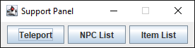

Support Panel for 2009scape

The Support panel is a ported and updated in-game tool from the legacy client, designed for administrators and modders to efficiently spawn items, NPCs, and teleport within the 2009Scape client. It eliminates the need for command-line input or external scripts, streamlining testing, debugging, and custom gameplay.
Features:
Item Spawn:
- Searchable item list with live filtering.
- Double-click to spawn selected item.
- Custom quantity input for bulk spawning.
NPC Spawn:
- Searchable NPC list by ID or name.
- Double-click to spawn selected NPC.
Teleport Menu:
- Searchable location list with 500+ entries.
- Double-click to teleport instantly.
Download:
- Compiled code: Proceed to download
- Source code: Proceed to download